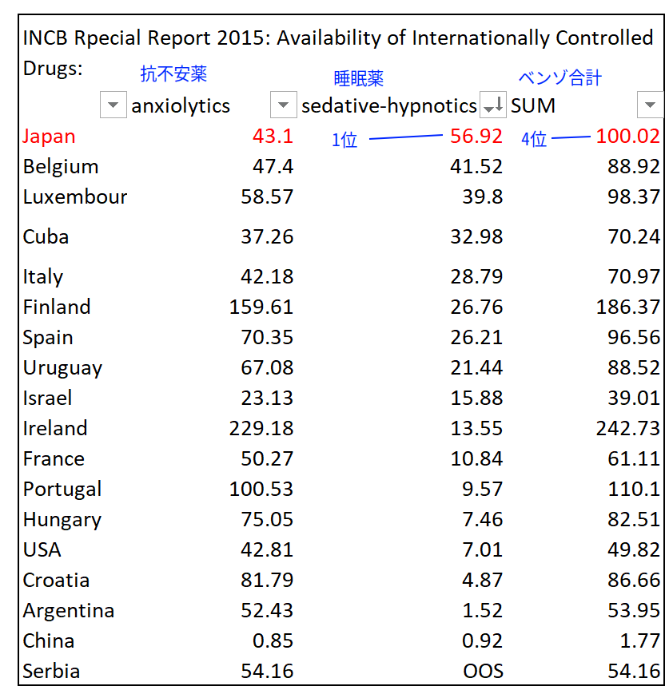

ベンゾジアゼピン概略
飲み続けていませんか…？ ソラナックス、デバス、レンドルミン、サイレース、フルニトラゼパム、アルプラゾラム、ロラゼパム、メイラックス、レキソタン、ユーロジン、ランドセン、リボトリール、エバミール、ロフラゼプ酸、etc...
このサイトは、なにも知らずに飲み続けている７百万人のベンゾジアゼピン系おクスリ服用者の方のために、わたしの実体験にもとづいて作りました。
世界中で処方されているほとんどの睡眠薬・抗不安薬・筋弛緩薬が、ベンゾジアゼピンというおクスリです。
ベンゾジアゼピン系薬剤は、英国、豪州、デンマークなどで処方が規制され、麻薬扱いです。
ベンゾジアゼピン薬剤が重篤な依存性を持つことは、それらの国々では常識で、処方期間は2~4週間を超えてはならない、と法規制されています。
注意： 海外の情報に調査を入れた結果、安易な処方は日本だけでなくほぼ世界中で蔓延しております。法規制のある上国ですら、です。
したがって日本以外のアジア各国では認識さえされていません。
ベンゾジアゼピン系薬剤はふたつに分類されます。ひとつは睡眠薬(sedative-hypnotics)、そして抗不安薬(anxiolytics)。
睡眠薬としての処方率（絶対量ではありません）は日本が世界最悪となっています。（2015年INCBデータS-DDD値より）

(S-DDD値： 人口1000人中何錠消費されているか、1日あたりの単位。 日本は1日に57錠／千人あたり 睡眠薬が使用されている。anxiolytics: 抗不安薬、sedative-hypnotics: 睡眠薬）
抗不安薬については国産ベンゾ「デパス」を2mg=１錠換算での計算で13位。両剤あわせたベンゾ全てでS-DDD値は世界４位の消費率です。
【なぜ最大薬害なのか】
ー被害者数比較ー
薬害エイズ：1800人
薬害肝炎：推定10,000人以上
子宮頸がんワクチン：1,739人以上
ベンゾジアゼピン：推定3,650,000人(
長期服用者730万人のうち半数が依存形成と計算）
※しかも半世紀前から"一生飲んでも問題のない薬"として連綿と処方され続け、その間に犠牲となった被害者は含みません。
発作時だけなど頓服として、または数日間の一時的な使用であれば、即効性もあり非常に良いおクスリです。手術前や救急などに使用されることもあります。
しかし、長期連用すると少量であっても"常用量依存"といってやめるのが非常に難しくなります（精神依存ではなく身体依存です。英語ではdependencyといいヤク中やアルコール依存のaddictionやabuseとは異質なものです）
急な断薬もしくは
短期間の減薬ですと、
「生き地獄」「拷問」
といってもいい離脱症状に何年も苦しむことになります。
どのくらいの辛さかと言いますとこのくらいです。
ベンゾからの離脱は覚せい剤、ヘロインよりもはるかに難しく、麻薬というより魔薬です。
ただ、不思議なことにすべての長期連用者がなるのではなく、“約半数”の連用服用者のみが依存形成されます。
なぜ半数の人たちは簡単にやめられるのか、薬理的な原因は解明されていません。しかし統計学的には諸説ありますがほぼ証明されています。1か月の連用で約半数が依存形成される、という説が有力です。
"Treatment of Benzodiazepine Dependence" by Michel Soyaka Ph.d
日本でもいままで処方規制がないどころか、処方量内であれば一生飲んでも大丈夫なクスリ、という誤った認識で長い間安全とされ、容易に処方されてきました。
ちなみに、ベンゾジアゼピン薬の処方の65％は「精神科以外」で処方されています。
例：
- PMSで婦人科
- 目眩で耳鼻科
- 肩こりで整形外科
- アトピーで皮膚科
- 頻尿で泌尿器科
- 胃痛で神経内科
- 顎関節症で歯科
器質的な異常が見つからないと、どの医師も「安定剤（抗不安薬）を出しておこう」というわけですね。
とりあえずビール（ベンゾ）、くらい気軽に処方します。 海外では「キャンディーのように処方された」とよく言います。
こうして、
クスリ好きの日本人はいま約730万人がベンゾを長期服用しています。２０１８年１０月厚労省NDBオープンデータより積算つまり、１２〜３人にひとりが服用。
この状況は他国でも同様で、米国では2000万人を超えるとされています。台湾、韓国ですと、正式なデータがないのですが現在5～6人にひとりでは?、という推計もあります。
これを読んでいるあなたもベンゾジアゼピン長期連用者かもしれません。
もし、自分に常備薬があったら、
ぜひベンゾジアゼピン系薬剤一覧ページをクリックして閲覧を！
ベンゾの種類はジェネリックも含めると40種におよびます。
自分は飲んでなかった？ それはよかった！ それでも家族は？親戚は？ 会社の同僚、部下、上司は？
ベンゾ睡眠薬の中には米国などで麻薬と同等扱い、もちこむと逮捕・収監されてしまうものもあります。（フルニトラゼパム、サイレース）。
あなたが経営者や人事なら、出張・赴任を命じる前に要チェックです！
日本でもついに厚労省が、2017年3月21日、ベンゾジアゼピンの常用量依存について認め、全国の医療機関、調剤薬局に注意喚起を行いました。
また、2018年4月からはベンゾ系薬剤の３剤規制が始まりました。
「ベンゾジアゼピン系薬剤は依存性がある」
イギリスに遅れること数十年、ようやく日本でもこの認識が浸透しつつあります。「気軽に処方していい薬ではないらしい」
ですが離脱症状の厳しさ、そして減薬方法については、まだほとんど共有されていません。
そして、ベンゾ系薬の危険性についてメディアではなぜかまったく取り上げられません。
この状況は世界中ででまったく同様です。
減薬方法について
主治医のいうとおりのペースでやめていくと、例えば元々の症状であった不眠・不安以外にも摩訶不思議な症状がたくさんでてくるので、ベンゾ減薬による離脱症状と自分でわかります。
（出なかったらおめでとうございます！ あなたは「もう半数」の依存形成されなかったラッキーな方です！ そのまま主治医の言うとおりのペースで減薬していってかまいません。）
離脱症状がでたらすぐにもとの容量に戻し、必要なら増薬し、症状を安定させ、それから水溶液タイトレーションによる年単位の減薬を行ってください！！
※ 主治医のいうとおりのペース例 ＝ 「半分に割って数週，さらに4分の1で数週、そして０に。」
自分は大丈夫だろう、と甘くみないで！！！ ベンゾの場合は数ヶ月での断薬は一気断薬と同じと思ってください。
短期で減断薬してしまいますと、断薬してからどんどん症状が激しくなっていき、半年～1年後に耐えられなくなって再服用してもまったく効果がありません。
例外なケースに合わせて減薬してしまうと、死んだほうがマシな恐ろしい症状に見舞われる可能性があり、さらに後遺症が残ってしまうこともあります（もう一度言いますが、ベンゾの離脱症状は麻薬の禁断症状よりはるかに厳しいです）
後戻りはできません
逆に、慎重に年単位で減薬していけば、毎日の減薬作業がちょっとめんどくさいだけで極小の症状で済み、働きながらでも少なくしていけるかもしれません。
まずはアシュトンマニュアル読んでください。
20世紀に作成されたので情報としては古いですがあなたの基礎知識を固める必須教科書だと思ってください。
アシュトンマニュアル日本語版はネットでダウンロードできます。 → こちら
//// 具体的な減薬方法 ////
水溶液タイトレーションの方法を参考にしてください。 ※ アシュトンマニュアルをすでに読んだ方はわかると思いますが、アシュトンマニュアルでも減薬ペースが速すぎるのです。また、アシュトンにも細かい間違いはいくつかあります。 このサイトやツイッター（開設予定）で粒度の小さな情報は発信していくので勉強してください。あなたの主治医はあなたです。